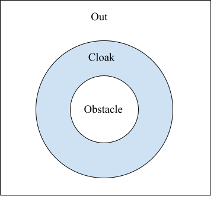

Thermal Cloak#
A thermal cloak makes a structure undetectable from outside observers. As shown in the figure below, assume you have a circular object to conceal. A thermal cloak can then be designed so the temperature outside the cloak is the same as if the object weren’t there.
{kind=link}
A common objective function that assesses the performance of a thermal cloak is Ref:
\[g(\mathbf{x}) = \frac{\sum_{i\in \mathrm{Out}} |T_i(\mathbf{x})-T_i^\mathbf{ref}|^2}
{\sum_{i\in \mathrm{Out}}|T_i^{\mathrm{ref}}-T_i^\mathbf{bare}|^2}\]
where \(\mathbf{T}^\mathbf{bare}\) is the temperature map for the case with no cloak but with the obstacle, and \(\mathbf{T}^\mathbf{ref}\) is the case with no cloak and obstacle. In the example below, the obstacle, the cloak, and the background materials are made of PDMS, copper, and steel, respectively.
In the example below, you will learn:
Optimization of partial domains
Symmetry exploitation
from matinverse import Geometry2D,BoundaryConditions,Fourier
from matinverse.filtering import Conic2D
from matinverse.optimizer import MMA,State
from jax import numpy as jnp
from matinverse import projection
from matinverse import BoundaryConditions
import matplotlib.pyplot as plt
import matplotlib.patches as patches
from matinverse.symmetry import get_symmetry
from functools import partial
from matinverse import Movie2D,Plot2D
from matinverse.inequalities import volume_fraction
from matinverse.projection import projection
import jax
#Set up Parameters--------------------------------------------
N = 200
grid = [N,N]
L = 0.100 #100 mm
size = [L,L]
R1 = 0.018
R2 = 0.030
T_L = -0.5
T_H = 0.5
# Material properties
k_obstacle = 0.15 *jnp.eye(2) #PDMS
k_background = 45 *jnp.eye(2) #Steel SPCC
k_A = 141 *jnp.eye(2) #Copper
k_B = 45 *jnp.eye(2) #Steel SPCC
geo = Geometry2D(grid,size)
fourier = Fourier(geo)
# Define domain regions
r_centroids = jnp.linalg.norm(geo.centroids,axis=1)
I_cloak = jnp.logical_and(r_centroids > R1,r_centroids < R2)
I_obstacle = (r_centroids < R1)
I_out = (r_centroids > R2)
# Reference and bare case
bcs = BoundaryConditions(geo)
bcs.temperature(lambda p: jnp.isclose(p[0], -size[0]/2), lambda batch, space, t: T_L)
bcs.temperature(lambda p: jnp.isclose(p[0], size[0]/2), lambda batch, space, t: T_H)
x0 = jnp.zeros((2, N**2))
kappa_map = jnp.tile(k_background, (2, N**2, 1, 1))
kappa_map = kappa_map.at[1, I_obstacle].set(k_obstacle[jnp.newaxis,:,:])
out = fourier(lambda batch, space, temp, t: kappa_map[batch, space], bcs, batch_size=2, X0=x0)
T_ref = out['T'][0]
T_bare = out['T'][1]
normalization = jnp.linalg.norm(T_ref[I_out] - T_bare[I_out])
kappa_background = jnp.zeros((N**2, 2, 2)).at[I_obstacle].set(k_obstacle).at[I_out].set(k_background)
R = L/20
filtering = Conic2D(geo, R, I_cloak)
spatial_background = jnp.ones(N**2)
def pre_transform(x):
x = spatial_background.at[I_cloak].set(x)
return get_symmetry(geo, '4-fold')(x)
def transform(x, beta):
x = pre_transform(x)
x = filtering(x)
return projection(x, beta)
@jax.jit
def objective(rho, beta):
rho = transform(rho, beta)
k_cloak = rho[I_cloak, None, None]*k_A + (1 - rho)[I_cloak, None, None]*k_B
kappa = jnp.array(kappa_background).at[I_cloak].set(k_cloak)
out = fourier(lambda batch, space, temp, t: kappa[space], boundary_conditions=bcs)
out['projected_rho'] = rho
g = jnp.power(jnp.linalg.norm(out['T'][I_out] - T_ref[I_out]) / normalization, 2)
return g, ({'g': [g]}, out)
nDOFs = len(I_cloak.nonzero()[0])
x = jax.random.uniform(jax.random.PRNGKey(0), nDOFs)
state = State()
betas = jnp.power(2, jnp.arange(2, 10))
maxiter = 30
for beta in betas:
print(beta)
x = MMA(partial(objective, beta=beta), x0=x, state=state, nDOFs=nDOFs, maxiter=maxiter)
evolution = jnp.array([aux['projected_rho'] for aux in state.aux])
Movie2D(evolution, geo, cmap='binary')
x = transform(x, beta=1e6)
fig, ax = plt.subplots(1, 4, figsize=(20, 10))
# Reference
ax[0].imshow(T_ref.reshape(grid).T, extent=[-L/2, L/2, -L/2, L/2], cmap='viridis')
ax[0].contour(T_ref.reshape(grid).T, extent=[-L/2, L/2, -L/2, L/2], levels=jnp.linspace(T_L, T_H, 30), colors='white')
ax[0].add_patch(patches.Circle((0, 0), radius=R1, edgecolor='r', facecolor='none', linewidth=2))
ax[0].add_patch(patches.Circle((0, 0), radius=R2, edgecolor='r', facecolor='none', linewidth=2))
ax[0].axis('off')
# Bare
ax[1].imshow(T_bare.reshape(grid).T, extent=[-L/2, L/2, -L/2, L/2], cmap='viridis')
ax[1].contour(T_bare.reshape(grid).T, extent=[-L/2, L/2, -L/2, L/2], levels=jnp.linspace(T_L, T_H, 30), colors='white')
ax[1].add_patch(patches.Circle((0, 0), radius=R1, edgecolor='r', facecolor='none', linewidth=2))
ax[1].add_patch(patches.Circle((0, 0), radius=R2, edgecolor='r', facecolor='none', linewidth=2))
ax[1].axis('off')
# Cloaked result
T = state.aux[-1]['T']
ax[2].imshow(T.reshape(grid).T, extent=[-L/2, L/2, -L/2, L/2], cmap='viridis')
ax[2].contour(T.reshape(grid).T, extent=[-L/2, L/2, -L/2, L/2], levels=jnp.linspace(T_L, T_H, 30), colors='white')
ax[2].add_patch(patches.Circle((0, 0), radius=R1, edgecolor='r', facecolor='none', linewidth=2))
ax[2].add_patch(patches.Circle((0, 0), radius=R2, edgecolor='r', facecolor='none', linewidth=2))
ax[2].axis('off')
# Design mask
ax[3].imshow(x.reshape(grid).T, extent=[-L/2, L/2, -L/2, L/2], cmap='binary')
ax[3].add_patch(patches.Circle((0, 0), radius=R1, edgecolor='r', facecolor='none', linewidth=2))
ax[3].add_patch(patches.Circle((0, 0), radius=R2, edgecolor='r', facecolor='none', linewidth=2))
ax[3].axis('off')
plt.ioff()
plt.show()
{kind=link}
{kind=link}